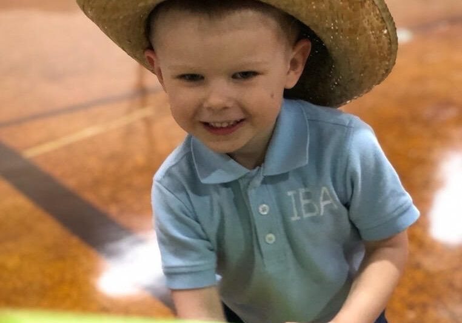
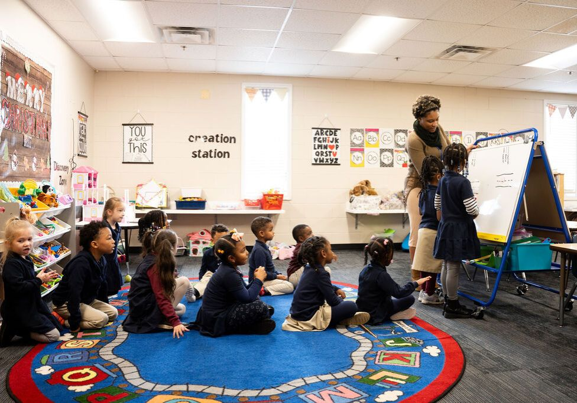
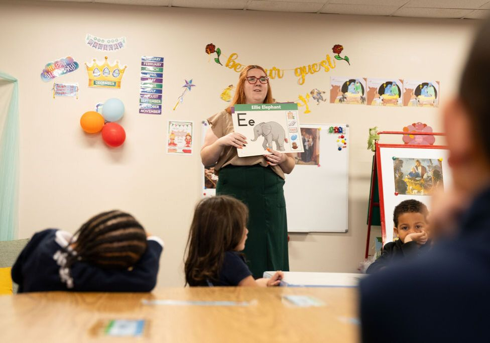
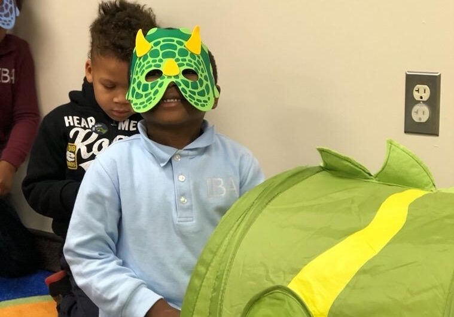

Stepping Stones Preschool
Why take your kids to daycare when you can take them to school?
Stepping Stones is a K3 to K4 12-month program. It is a place where children grow and learn in a safe, loving and Christ-honoring environment.
We use the Abeka curriculum for all of our subjects. There is focused teaching every day by qualified teachers. Some students begin reading before they even leave our K4 program. This sets them up for great success when they enter K5. Working with and educating children is not new to us.
Stepping Stones Preschool and Daycare is an extension of Independent Baptist Church and Academy in Clinton, Maryland. Our ministry has been proudly serving the Greater Washington, D.C. area with Christian Education since 1973.




Staff and Faculty
Joanna Febo
K4 Teacher
Natalie Dove
K3 Teacher
Parent Resources
Enrollment Information
At Stepping Stones Preschool, we strive to provide a solid foundation academically and socially at a price that people can afford. We currently charge $850 per month for the first student. Each additional sibling gets a discounted rate of $750 per month. You can see all of our detailed financial and enrollment information by downloading our packet.
If you have any questions, contact us at (301) 856-1616 or iba@ibcministries.org.
Explore the Possibilities at IBA!
Come see the campus, meet our teachers, and ask your questions.